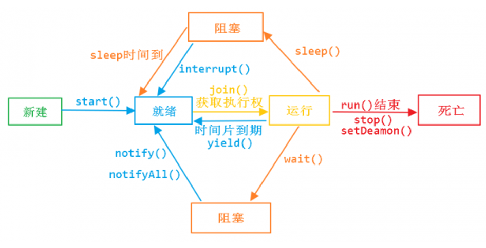

1）java里的程序天生都是多线程的
public static void main(String[] args) {
ThreadMXBean threadMXBean = ManagementFactory.getThreadMXBean();
ThreadInfo[] threadInfos = threadMXBean.dumpAllThreads(false, false);
for (ThreadInfo threadInfo : threadInfos) {
System.out.println("["+threadInfo.getThreadId()+"]"+" "+threadInfo.getThreadName());
}
}
/**
* [6] Monitor Ctrl-Break
* [5] Attach Listener
* [4] Signal Dispatcher
* [3] Finalizer
* [2] Reference Handler
* [1] main
*/可以看出我们只是启动了一个main方法，java虚拟机也给我们启动了6个线程，所以我们说java里的程序天生都是多线程的
以下内容学习自：https://blog.csdn.net/m0_38075425/article/details/81606156
通过继承Thread类来创建并启动多线程步骤如下：
1、定义Thread类的子类，并重写该类的run()方法，该run()方法的方法体就代表了线程需要完成的任务。因此把run方法称为线程执行体。
2、创建Thread子类的实例，即创建了线程对象。
3、调用线程对象的start()方法来启动该线程。
private static class testThread extends Thread{
@Override
public void run() {
for (int i = 0; i < 10 ; i++) {
System.out.println(Thread.currentThread().getName()+" 执行了 "+i);
}
}
}
//测试
public static void main(String[] args) {
new testThread().start();
for (int i = 0; i < 10 ; i++) {
System.out.println(Thread.currentThread().getName()+" 执行了 "+i);
}
}
/**执行结果
main 执行了 0
Thread-0 执行了 0
main 执行了 1
main 执行了 2
main 执行了 3
Thread-0 执行了 1
main 执行了 4
Thread-0 执行了 2
main 执行了 5
Thread-0 执行了 3
main 执行了 6
Thread-0 执行了 4
main 执行了 7
Thread-0 执行了 5
Thread-0 执行了 6
main 执行了 8
*/可以看到main线程和thread0线程的for循环交替执行，线程启动成功。此实例程序中Thread1类继承了Thread类并重写了run方法，在run方法中我们打印出当前执行的线程名称为哪个线程正在执行了，执行了多少次，使用成员变量i来记录执行的次数。在main函数中我们创建了此线程的实例对象，并通过start方法启动了这个个线程，执行时大家可以看到线程是以抢占式的方式运行。虽然只创建了1个线程实例，实际上共有2个线程在运行，还有main方法代表的主线程的线程执行体。
此外，我们还学习了线程的两个方法：
1.Thread.currentThread()，是Thread类的静态方法，该方法总是返回当前正在执行的线程对象。
2.getName()：该方法是Thread类的实例方法，该方法返当前正在执行的线程的名称。在默认情况下，主线程的名称为main，用户启动的多线程的名称依次为Thread-0,Thread-1,Thread-3..Thread-n等。实现Runnable接口创建并启动多线程的步骤如下：
1.定义Runnable接口的实现类，并重写该接口的run方法，该run方法的方法体同样是该线程的线程执行体
2.创建Runnable实现类的实例对象，并以此实例对象作为Thread的target来创建Thread类，该Thread对象才是真正的线程对象。
3.调用线程对象的start()方法来启动该线程。
private static class testRunnable implements Runnable{
@Override
public void run() {
for (int i = 0; i < 10 ; i++) {
System.out.println(Thread.currentThread().getName()+" 执行了 "+i);
}
}
}
//测试
public static void main(String[] args) {
new Thread(new testRunnable()).start();
for (int i = 0; i < 10 ; i++) {
System.out.println(Thread.currentThread().getName()+" 执行了 "+i);
}
}这里尤其是注意：main函数中名没有直接执行Thread2的run方法，而是将Thread2填入到了Thread中，使用start方法来启动。Runnable实现类里包含run方法，仅仅作为线程执行体，而实际的线程对象依然是Thread实例对象，Thread为真正创建线程的对象。
实现Callable接口创建并启动多线程的步骤如下：
1.定义Callable接口的实现类，并重写该接口的call方法。Callable可以接口一个作为返回值类型的泛型。
2.创建Callable实现类的实例对象，由于Thread类不能直接接收一个Callable类作为参数。所以我们还需要创建FutureTask实例对象来接受Callable实现类的实例对象，然后我们再以此实例对象作为Thread的target来创建Thread类。
3.调用线程对象的start()方法来启动该线程，并且我们可以通过FutureTask对象的get()方法获取call方法的返回值
private static class testCallable implements Callable<String>{
@Override
public String call() throws Exception {
System.out.println("I am implements Callable");
return "CallResult";
}
}
public static void main(String[] args) throws ExecutionException, InterruptedException {
FutureTask<String> futureTask = new FutureTask<>(new testCallable());
new Thread(futureTask).start();
System.out.println(futureTask.get());
}
/** 执行结果
I am implements Callable
CallResult
*/在最初的JDK版本中，Thread类提供了一个线程终止的方法stop()方法，但是现在在JDK源码中发现，stop（）方法已经被废弃。主要原因是：stop()方法太过暴力。强制终止一个正在执行的线程。这样的话会造成一些数据不一致的问题。
public void Thread.interrupt() //中断线程
public boolean Thread.isInterrupted() //判断线程是否中断
public static boolean Thread.interrupted() //判断是否被中断，并清除当前中断状态Thread.interrupt()方法是一个实例方法，它通知目标线程中断，也是设置中断标志位。中断标志位表示当前线程已经被中断了。
Thread.isInterrupted() 方法也是实例方法，主要是检查当前线程是否被中断（通过检查中断标志位），返回值是boolean类型。
Thread.interrupted() 方法也是用来判断当前线程是否被中断，但同时清除当前线程的中断标志位状态。
测试程序
public static void main(String[] args) throws ExecutionException, InterruptedException {
Thread thread = new Thread(){
@Override
public void run() {
//中断处理逻辑
while (true){
System.out.println("The thread is waiting for interrupted!");
/*if (Thread.currentThread().isInterrupted()){
System.out.println("The thread is interrupted!");
break;
}*/
}
}
};
thread.start();
thread.interrupt();//中断线程
}
/**
The thread is waiting for interrupted!
The thread is waiting for interrupted!
The thread is waiting for interrupted!
The thread is waiting for interrupted!
The thread is waiting for interrupted!
The thread is waiting for interrupted!
.....
*/可以看到如果单独的使用interrupt()方法去中断线程的话，该线程其实并没有中断
public static void main(String[] args) throws ExecutionException, InterruptedException {
Thread thread = new Thread(){
@Override
public void run() {
while (true){
System.out.println("The thread is waiting for interrupted!");
if (Thread.currentThread().isInterrupted()){
System.out.println("The thread is interrupted!");
break;
}
}
}
};
thread.start();
thread.interrupt();//中断线程
}
/** 执行结果
The thread is waiting for interrupted!
The thread is interrupted!
*/注意： 当线程A调用线程B的中断方法时，如果B的线程正在进行阻塞（例如 sleep、wait 等），那么此时就会抛出 InterruptExcpetion，同时B线程的中断状态会被重置false，此时两种处理办法：
一、在捕获到InterruptException时即在catch中可以将该线程的中断状态重新置为true，并记录日志。这样做相当于维持B线程中断状态不变。
二、将异常继续抛出。
public static void main(String[] args) throws ExecutionException, InterruptedException {
Thread thread = new Thread(){
@Override
public void run() {
while (true){
try {
sleep(2000);
} catch (InterruptedException e) {
interrupt();
e.printStackTrace();
}
if (Thread.currentThread().isInterrupted()){
System.out.println("The thread is interrupted!");
break;
}
}
}
};
thread.start();
thread.interrupt();//中断线程
}下面是一个线程的生命周期图：

1.start（）方法来启动线程，真正实现了多线程运行。这时无需等待run方法体代码执行完毕，可以直接继续执行下面的代码；通过调用Thread类的start()方法来启动一个线程， 这时此线程是处于就绪状态， 并没有运行。 然后通过此Thread类调用方法run()来完成其运行操作的， 这里方法run()称为线程体，它包含了要执行的这个线程的内容， Run方法运行结束， 此线程终止。然后CPU再调度其它线程。
2.run（）方法当作普通方法的方式调用。程序还是要顺序执行，要等待run方法体执行完毕后，才可继续执行下面的代码； 若当先线程对象没有调用start()方法，直接调用run()方法，则JVM没有将此线程加入线程栈，实则是main线程调用了run()方法